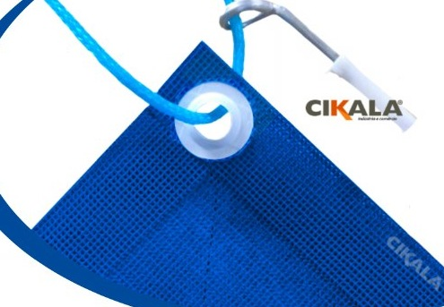
Suporte ao produto
Manuais e recomendações de uso
Consulte as orientações do seu produto para instalar, aplicar e conservar com os cuidados indicados pela CIKALA.
Todos os manuais
19 manuais disponíveis
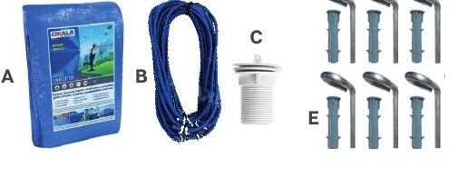
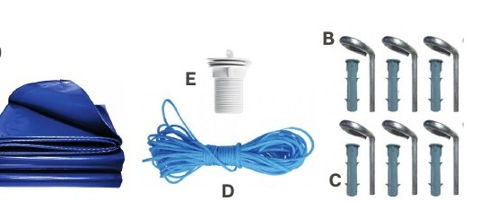

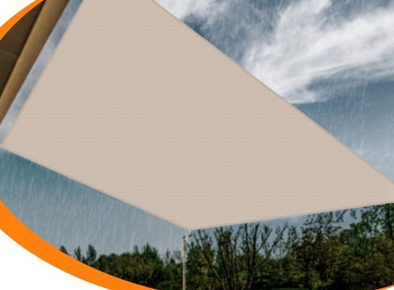
Coberturas e Sombreamento
Tela Shade triangular
Fixação nos três cantos com kit específico.
Abrir manual
Coberturas e Sombreamento
Forro Shade para pergolado
Fixação pelas bordas com perfis e ripas.
Abrir manual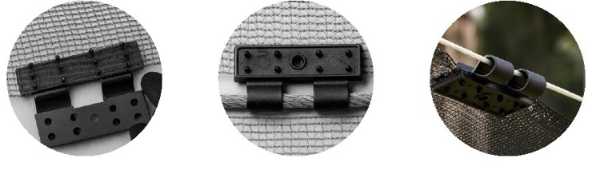
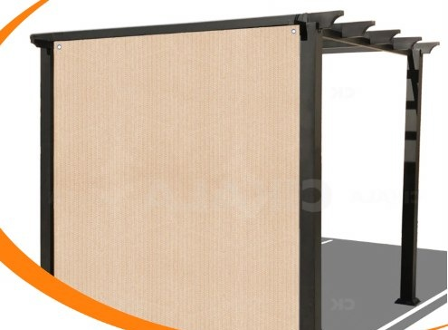
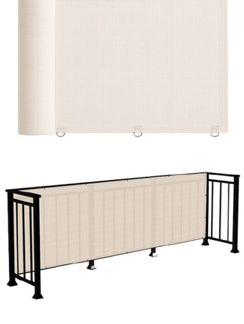
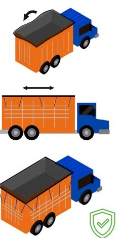

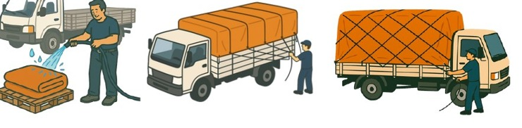
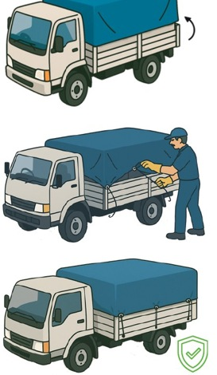
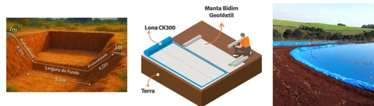

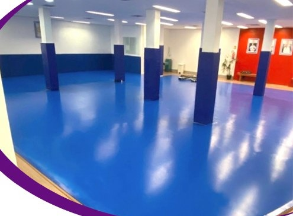

Nenhum manual encontrado
Experimente outro nome de produto ou selecione uma categoria diferente.
Precisa de orientação?
Informe o produto, o modelo e sua dúvida à equipe CIKALA.